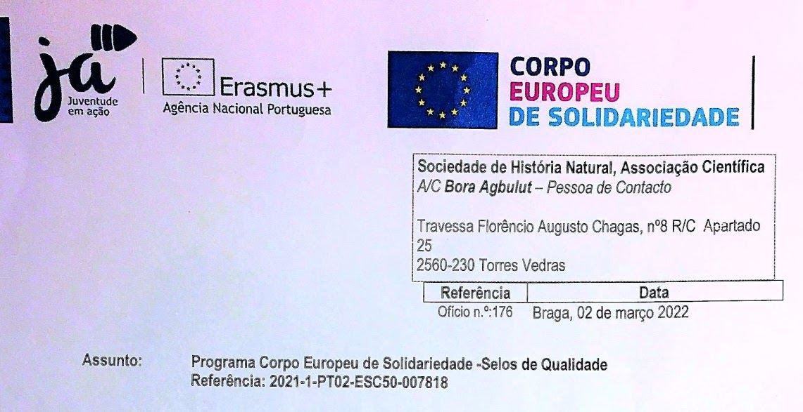
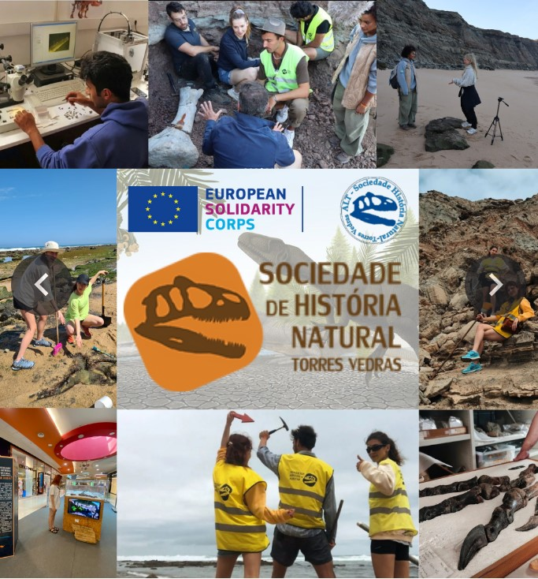

Erasmus+ / ESC
Sociedade de História Natural (SHN) Ortaklığı
Sociedade de História Natural (SHN) Partnership
Parceria Sociedade de História Natural (SHN)
Portekizli ana ortağımız Sociedade de História Natural, Avrupa Dayanışma Programı (ESC) ve Erasmus+ projelerinde ev sahibi ve lider kuruluş olarak 2021-2027 dönemi için danışmanlığımız altında Kalite Etiketi almıştır.


Uluslararası gönüllüleri ağırlamak ve Avrupalı ortaklara Türk katılımcılar göndermek için karşılıklı iş birliğine tamamen açığız.
We are fully open to mutual collaborations to host international volunteers and send Turkish participants to European partners.
Estamos totalmente abertos a colaborações mútuas para receber voluntários internacionais e enviar participantes turcos para parceiros europeus.